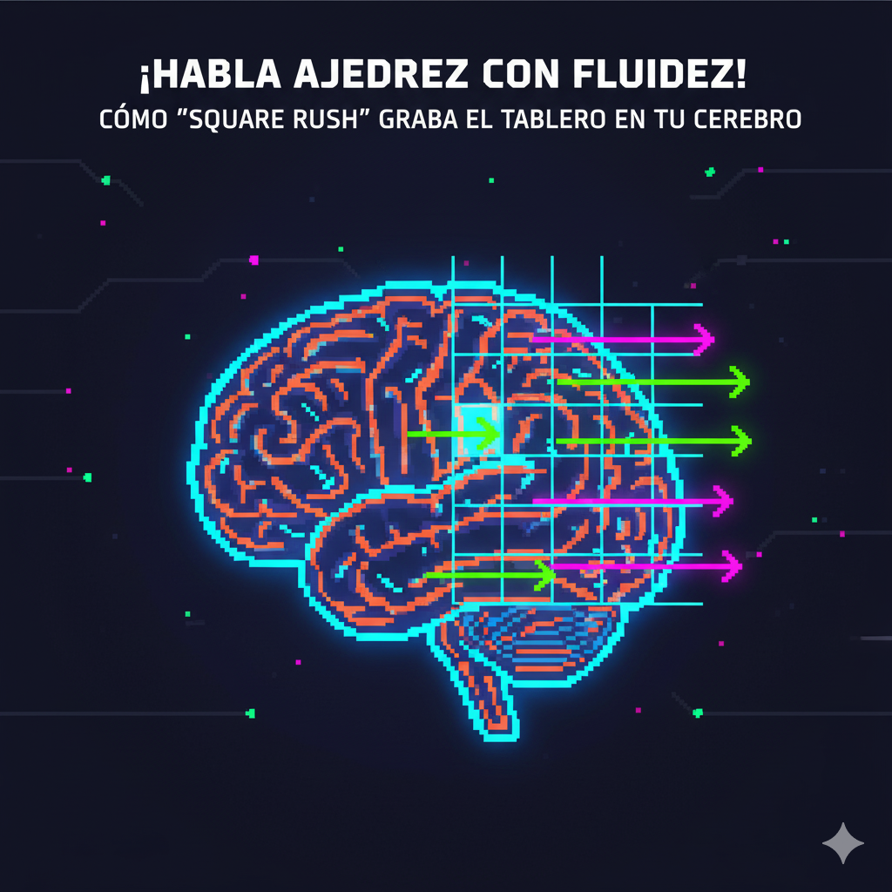

El arma secreta para una visualización instantánea y un cálculo sin errores.
¿Alguna vez has visto a un Gran Maestro analizar una partida? Hablan en un código que parece de otro mundo: "Si él va a Af4, yo tengo Cg6, amenazando e5...". Suena como un superpoder, pero es una habilidad entrenada: la **fluidez en las coordenadas**.
Saber dónde está cada casilla *sin pensar* es el alfabeto del ajedrez. No puedes leer un libro, seguir un video de YouTube o calcular una variante si tu cerebro tiene que detenerse a "traducir" qué significa "h7". Square Rush, nuestro adictivo juego de velocidad, está diseñado para eliminar esa fricción. No es un simple juego; es el camino más rápido para que el tablero se convierta en una segunda naturaleza para ti.
Para un principiante, "d5" es una letra y un número. Para un jugador fluido, es un *lugar*. Es el centro, un puesto avanzado clave, el objetivo de la apertura... 'Square Rush' te obliga, bajo la presión del reloj, a hacer esa conexión miles de veces. El juego transforma la "notación" de ser algo que *lees* a ser algo que *ves* instantáneamente. Dejas de traducir y empiezas a "hablar" ajedrez.
El cálculo es visualización. Cuando analizas "Si muevo mi Dama a h5, el Rey se mueve a g8...", no puedes permitirte perder valioso tiempo mental buscando dónde están "h5" y "g8". 'Square Rush' entrena tu "identificación de objetivos" (target acquisition). Al hacer que encontrar casillas sea un acto reflejo, tu cerebro se libera por completo para centrarse en lo que importa: las tácticas, las amenazas y las secuencias ganadoras.
¿El secreto para mejorar rápido? Aprender de los mejores. Pero es frustrante leer un libro de ajedrez o ver un video si tienes que pausar cada 5 segundos para mover las piezas en un tablero físico. 'Square Rush' es tu pasaporte para el "estudio sin tablero". Cuando las coordenadas son automáticas, puedes seguir análisis complejos en tu mente, absorbiendo ideas y patrones mientras viajas en autobús o esperas en una fila.
El tablero de ajedrez no es solo una cuadrícula de 64 casillas; es una red de relaciones. El entrenamiento constante con 'Square Rush' te da un "sentido" innato de estas relaciones. Empezarás a *sentir* que "a1" y "h8" están conectadas por una larga diagonal, que "c3" y "e4" son casillas naturales para un caballo, o que "f2" y "f7" son los puntos débiles por defecto. Estás construyendo un GPS mental que te guía por el tablero.
Jugar a ciegas (blindfold chess) parece magia, pero su fundamento es simple: una maestría total de las coordenadas. Es imposible seguir una partida en tu mente si no tienes un "mapa" mental perfecto del tablero. 'Square Rush' es el Entrenador de Vuelo que necesitas. Es el Nivel 1 para construir esa matriz de 8x8 en tu imaginación, la habilidad fundamental sobre la que se construyen todas las proezas de visualización.
El conocimiento de las coordenadas es la habilidad más subestimada en el ajedrez. No dejes que una base débil frene tu progreso. ¡Es hora de grabar el tablero en tu cerebro a velocidad arcade!